Avevo diciassette anni e facevo la doposcuolista.
Andavo nelle case, mi sedevo ai tavoli della cucina, aprivo i diari scolastici e cercavo di rimettere insieme i pezzi di bambini che dalla scuola tornavano a pezzi. Ne ho seguiti tanti, in quegli anni. Li ricordo quasi tutti.
Ma ricordo soprattutto le riunioni a cui assistevo, quando le mamme mi raccontavano cosa si erano sentite dire dai colloqui con le maestre. La frase che tornava sempre, con varianti minime, era questa: "Deve impegnarsi di più."
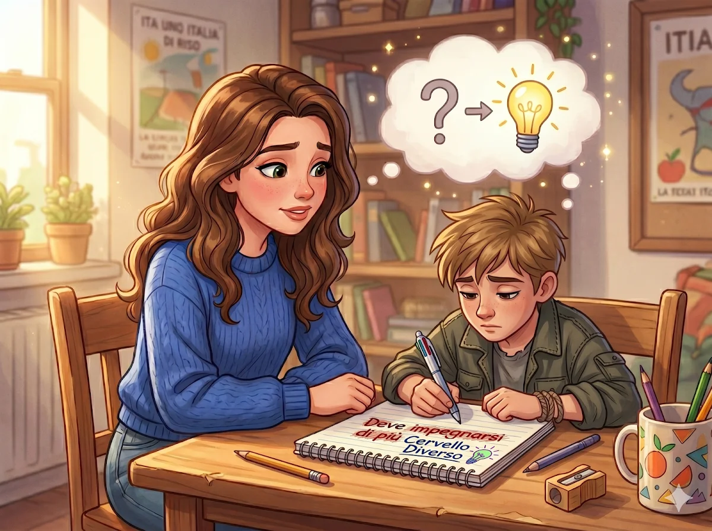
Non era stupido. Aveva un cervello che funzionava in modo diverso - e nessuno gliel'aveva ancora detto.
Quegli anni di doposcuola - cinque anni, tantissime famiglie, tantissimi bambini - sono stati la mia vera scuola di pedagogia. Molto prima dei libri, molto prima di diventare mamma di Beatrice, Ginevra e Federico. Lì ho capito sul campo cosa significa avere un DSA e non saperlo. E cosa significa, per un bambino, essere visto finalmente per come funziona davvero.
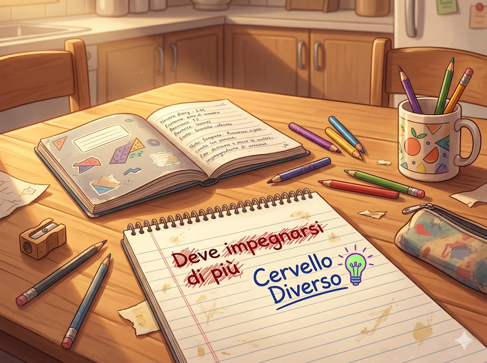
Prima di tutto: cosa sono davvero i DSA
Partiamo dal principio - senza il foglio di carta del neuropsichiatra in mano.
I Disturbi Specifici dell'Apprendimento - Dislessia, Disgrafia, Disortografia, Discalculia - non riguardano l'intelligenza. Non sono un difetto di fabbrica. Sono un funzionamento diverso nei percorsi che il cervello usa per leggere, scrivere, calcolare.
Un bambino dislessico che legge non è lento: sta decifrando un codice che per lui si muove. Le lettere si specchiano, si scambiano, balzano. Ogni parola è un piccolo puzzle da ricomporre in tempo reale, mentre il resto della classe va avanti.
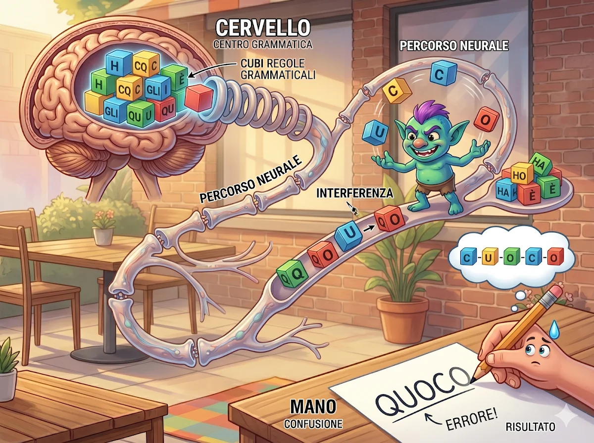
Un bambino con disortografia non "non studia le regole": le studia, le impara, e poi il cervello le perde nel tragitto dalla testa alla penna. Come se qualcuno cambiasse le istruzioni a metà partita.
La discalculia? Immaginatevi di dover fare 7×8 ogni volta come se fosse la prima volta che vedete quei numeri in vita vostra. Senza ancora capire perché ci debba essere un risultato fisso.
Non è pigrizia. È un cervello che chiede una porta d'ingresso diversa. E il nostro compito - da genitori, da insegnanti, da doposcuolisti di quartiere - è trovare quella porta.
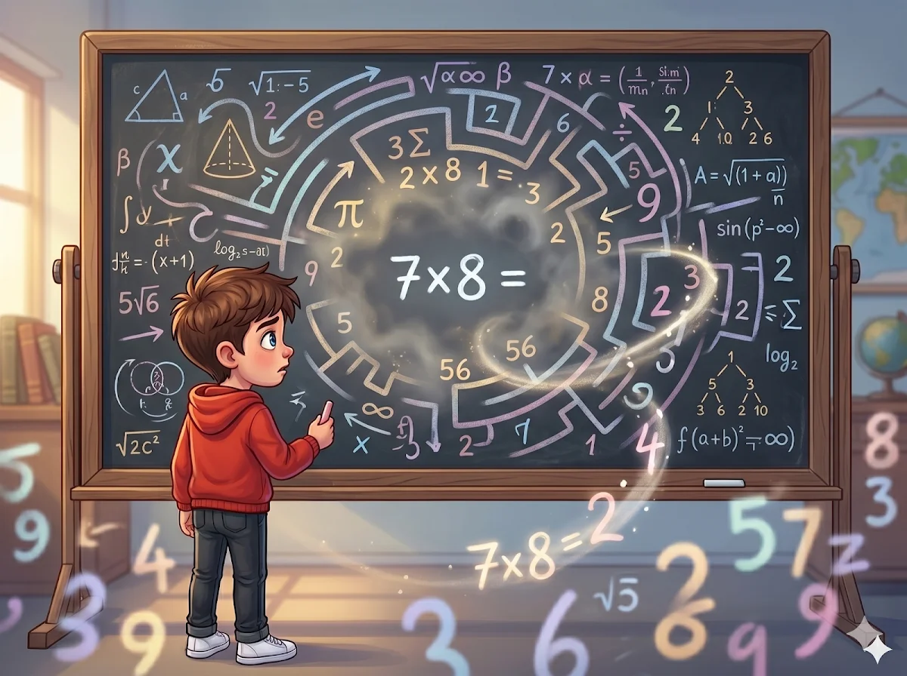
Le strategie che funzionano - quelle vere, non da manuale
Vi racconto cosa ha cambiato le cose. Non in astratto: nei pomeriggi reali, ai tavoli reali, con bambini reali che avevano già dato tutto quello che avevano a scuola e dovevano trovare ancora qualcosa per i compiti.
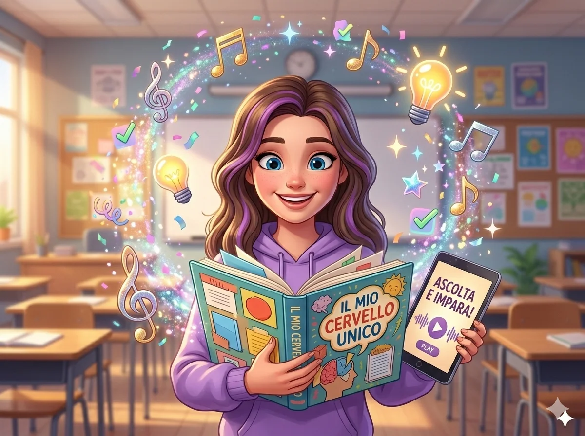
1. Il visivo salva tutto
I bambini con DSA pensano spesso per immagini. Le parole sulla pagina sono un ostacolo; un disegno, uno schema, una mappa colorata è un'autostrada.
Uno dei cambiamenti più piccoli e più potenti che ho visto fare la differenza: cambiare il font. Esistono font progettati apposta per la dislessia, dove ogni lettera ha una forma inconfondibile e non può essere scambiata con il suo specchio. Stampare un testo con quel font, per certi bambini, è come togliergli un filtro dagli occhi. Le parole smettono di muoversi.
Le mappe concettuali colorate, i titoli evidenziati, le frecce che collegano le idee: non sono semplificazioni. Sono traduzioni in una lingua che il loro cervello capisce meglio.
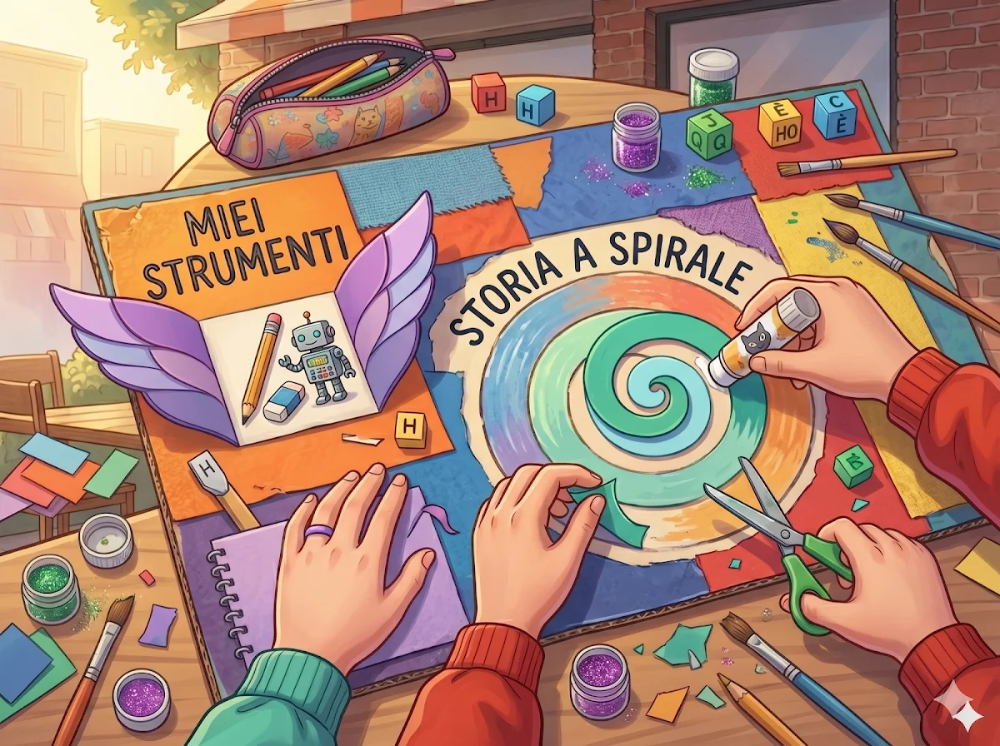
2. Il fare è apprendere
Se la lettura è un muro, costruiamo una porta nel muro.
I Lapbook che uso con i miei figli - e che usavo già allora con i bambini che seguivo - nascono esattamente da qui: imparare tagliando, incollando, costruendo con le mani. Un Lapbook sulla storia antica vale dieci pagine di libro scolastico, perché mentre lo costruisci stai già ragionando, organizzando, scegliendo cosa va dove.
Il corpo è il primo mediatore muto che abbiamo. Usarlo vuol dire bypassare l'ostacolo e arrivare al contenuto da un'altra strada.
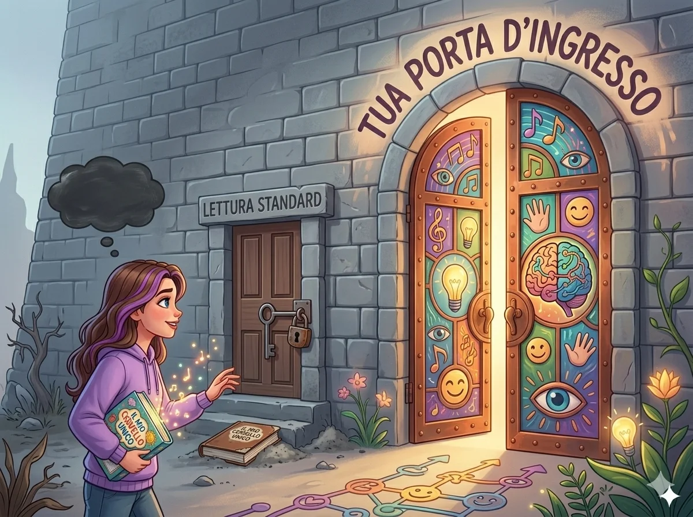
3. Gli strumenti compensativi non sono aiuti extra - sono occhiali
Questo è il punto su cui mi sono trovata a litigare, anche solo silenziosamente, molte volte.
La sintesi vocale, gli audiolibri, le penne lettori, i software specifici: non abbassano l'asticella. La rendono accessibile.
A nessuno viene in mente di togliere gli occhiali a un bambino miope prima di un compito in classe perché "così almeno si sforza". Eppure con i DSA questa logica assurda persiste ancora.
Mia figlia Beatrice con gli audiolibri legge - nel senso vero della parola: comprende, analizza, si emoziona. Senza audiolibri, il 90% delle sue energie va nel decifrare le lettere e non gliene rimane per il senso di quello che sta leggendo.
Gli strumenti non fanno il lavoro per loro. Abbattono il muro che gli impedisce di fare il lavoro da soli.
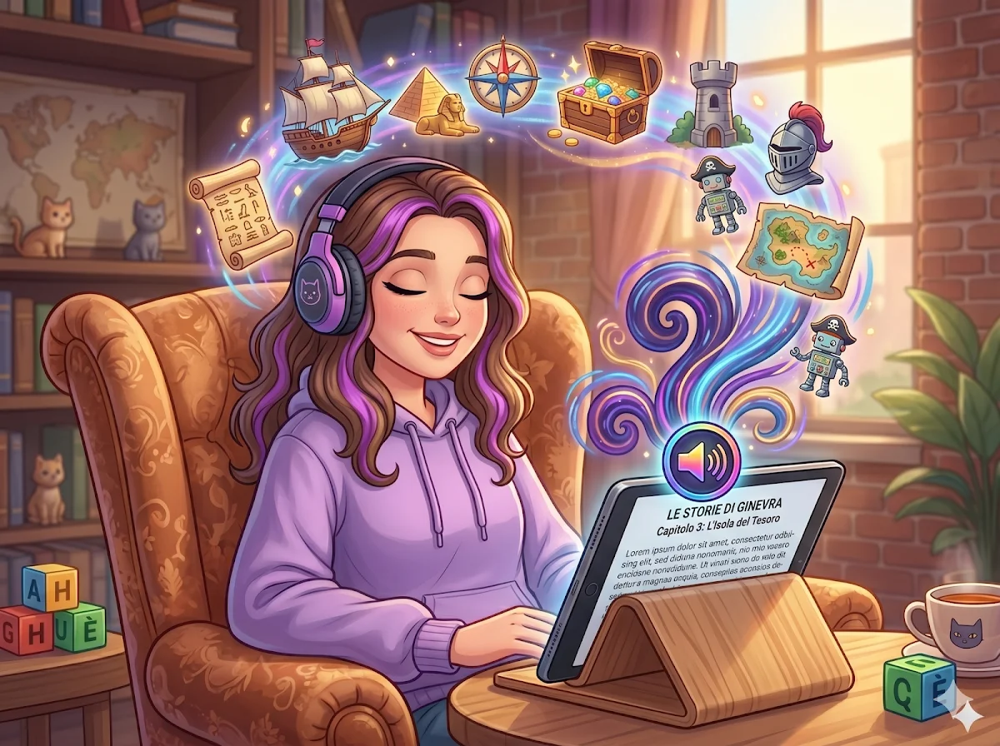
4. Micro-step, non maratone
Questo vale per tutti, ma per i bambini con DSA è questione di sopravvivenza emotiva.
Un compito visto tutto insieme è paralizzante. Lo stesso compito diviso in tre passaggi di dieci minuti ciascuno diventa gestibile. È il Metodo a Spirale applicato alla vita quotidiana: piccoli giri, ogni volta un po' più in là, senza che l'ansia abbia il tempo di insediarsi.
In casa nostra - e prima ancora ai tavoli di doposcuola - il timer era sacro. Non come pressione: come protezione. Il tempo è visibile, misurabile, finisce. E quando finisce, si può smettere senza sensi di colpa.
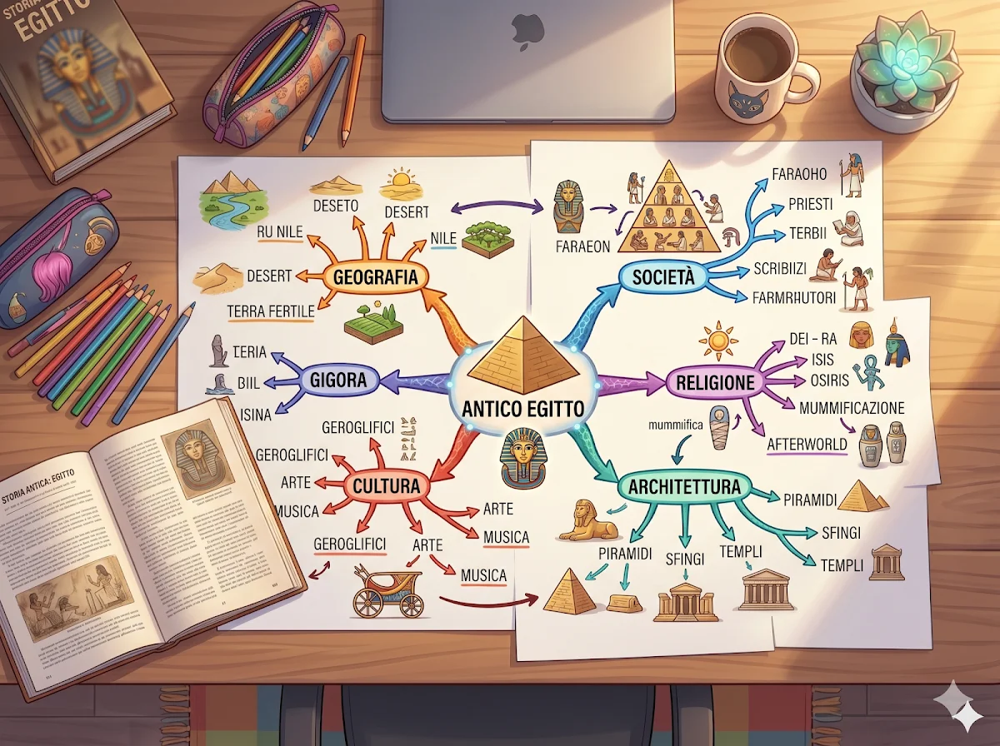
5. Lo spazio deve essere sicuro
L'ultima strategia - e forse la più importante - non si compra e non si scarica.
Un bambino che ha già passato sei ore a scuola sentendosi inadeguato non può arrivare al pomeriggio e trovare un altro ring. Ha bisogno di un posto dove l'errore non è una colpa, dove la fatica è normale, dove viene visto per quello che sa fare - non bacchettato per quello che fatica a fare.
Questo è il cuore della Pedagogia della Relazione: il voto non esiste. Esiste il processo. Esiste l'impegno. Esiste la protezione del legame affettivo, che è la prima condizione perché qualsiasi apprendimento abbia luogo.
L'ho imparato ai tavoli delle cucine altrui, anni prima di avere un tavolo mio con i miei figli intorno.
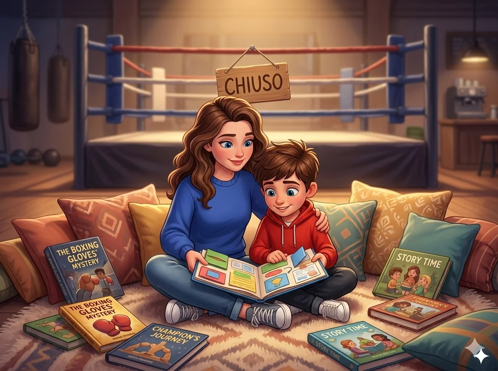
La parte che nessun manuale scrive
La sfida più grande dei DSA non è tecnica. Non si risolve con il font giusto o il software giusto, anche se quelli aiutano.
La sfida più grande è guardare un bambino che sa di essere intelligente - lo sente, lo vive - e non riesce a capire perché le lettere non stanno ferme, perché i numeri scappano, perché tutti gli altri sembrano farlo con una facilità che per lui è impossibile. E comincia a pensare che il problema sia lui.
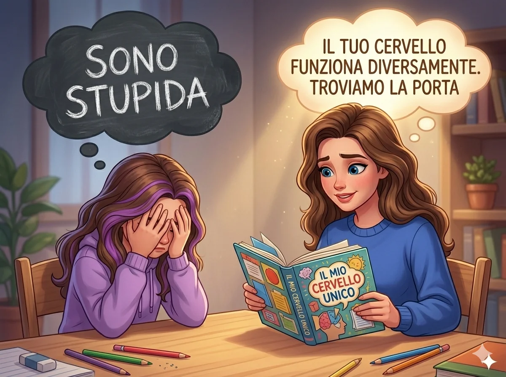
Non con rassicurazioni vuote ("sei bravissimo!"), ma con la realtà concreta di un sistema che si adatta a lui. Con gli strumenti giusti. Con il tempo che merita. Con la nostra presenza accanto, non sopra.
Beatrice, con tutta la complessità del suo funzionamento - dislessia, disortografia, discalculia, ADHD, plusdotazione - mi ha insegnato che la gioia di sentirsi capace è più potente di qualsiasi voto. Quella gioia è il motore.
Noi dobbiamo solo smettere di bloccarla.
Voi come vivete i DSA - in famiglia, in classe, o in anni di compiti al tavolo di qualcun altro?
Scrivetemi nei commenti: nella fatica si sta meglio in compagnia!!!
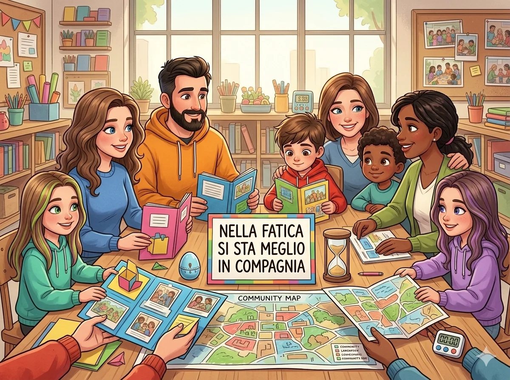